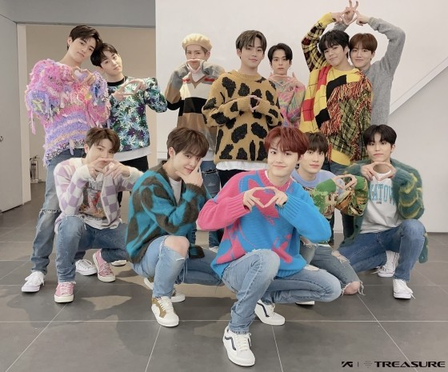

- 오렌지
- 미쳐가네
- my treasure

2020년 8월 7일에 데뷔한 트레저는 yg에서 4년만에 신인으로 선보인 보이그룹입니다.
총 12명으로 구성되었으며
멤버는 리더 최현석, 박지훈. 그 외에 요시, 준규, 마시호, 운재혁, 아사히, 방예담, 도영, 하루토, 박정우, 소정환 으로 구성되어 있습니다.
yg보석함 서바이벌에서 끝까지 살아남은 멤버들로 실력은 물론 신인괴물이라는 별명까지 붙으며 놀라운 속도로 성장하고 있습니다.
팬들의 호칭은 트메